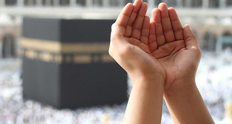

Aaj Ki Dua
Yahaan roz ki chhoti, aasaan aur zyada padhi
jane wali duas di gayi hain.
🔹Dua 1 - Bismillah Ki Dua
Bismillah hir-Rahman nir-Raheem
(Shuru karta hoon Allah ke naam se,
jo bada
Meherbaan aur Raheem hai.)
🔹Dua 2 - Ghar se Nikalne ki Dua
Bismillah, tawakkaltu ‘alallah
(Allah ke naam se
nikalta hoon, aur Allah
par bharosa karta hoon.)
🔹Dua 3 - Maafi ki Dua
Astaghfirullah Rabbi min kulli zambiyon
wa atubu ilayh.
(Ae mere Rabb, main har gunaah se
maafi maangta hoon.)
🔹Dua 4 - Taqwa ki Dua
Allahumma inni as’aluka al-huda wat-tuqa.
(Ya Allah mujhe
hidayat aur parhezgari
naseeb farma.)
🔹Ek Motivational Line
Dua se takdeer badal sakti hai
Back to Home |
Bacl to Top